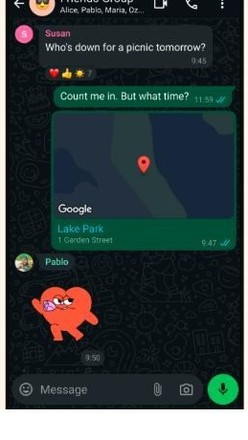
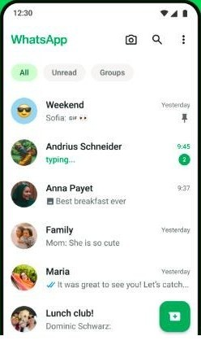
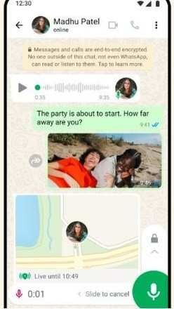
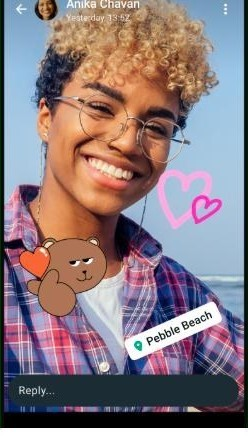
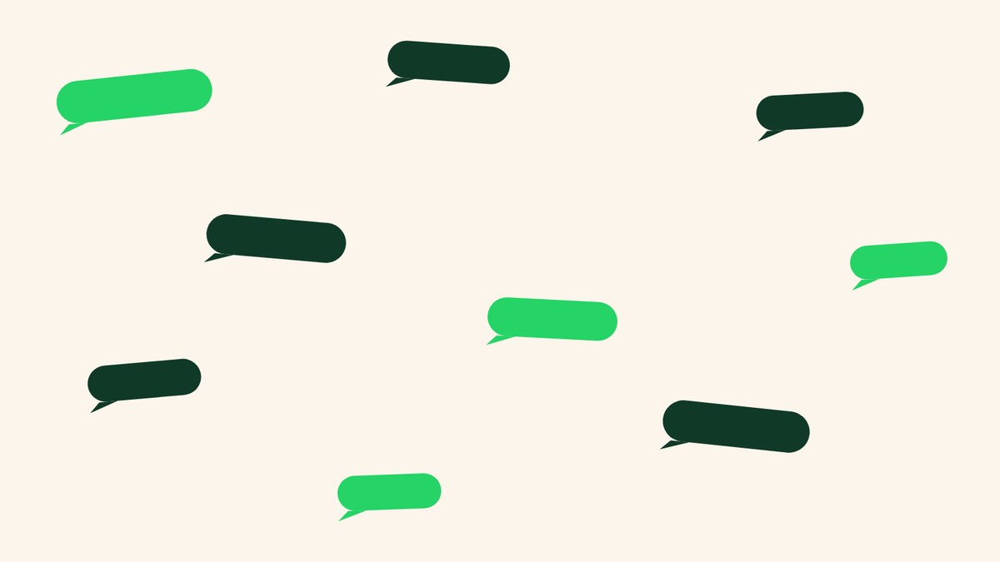

תיאום קבוצות
קבוצה אחת לכל משימה, וכל מה שסוכם נשאר בתוכה
הודעות, תמונות, מיקום ושיחת וידאו עד 32 משתתפים, בשיחה אחת. בלי דמי מנוי.
לוועד הורים, לצוות מתנדבים, לארגון טיול, לקבוצת שכונה.
בלי שם משתמש, בלי סיסמה, בלי דמי מנוי. נדרש חיבור אינטרנט.

הבעיה
אותה שאלה, שלוש פעמים
חלק מהאנשים עונים בהודעה, חלק במייל, ואחד מרים טלפון. מי שהצטרף אחרון לא יודע מה כבר סוכם, וההחלטה שנפלה ביום שני נאמרת שוב ביום חמישי.
מה בפנים
שלושה דברים שקורים בתוך הקבוצה
כותבים במקום אחד
טקסט, תמונות, וידאו והודעות קוליות באותה שיחה, שאפשר לגלול אחורה עד ההתחלה.
מדברים בלי לתאם שעה
שיחת קול או וידאו יוצאת מתוך הקבוצה עצמה, עד 32 משתתפים.
יודעים מי איפה
שיתוף מיקום בתוך הקבוצה, כל עוד הוא פעיל, לכל מי שבשטח.
המספרים
מה שאפשר לבדוק
המסכים
איך זה נראה בפועל
חמישה מסכים אמיתיים, מתוך דף האפליקציה בחנות Google Play




כל מה שנאמר בקבוצה, במקום אחד.
התהליך
שלושה צעדים עד שהקבוצה עובדת
מתקינים ומאמתים מספר
הזיהוי הוא מספר הטלפון. אין שם משתמש ואין סיסמה לזכור.
1פותחים קבוצה ומוסיפים
בוחרים משתתפים מתוך אנשי הקשר שכבר בטלפון, בלי לשלוח הזמנה.
2כותבים בה את המשימה
מכאן כל התיאום נשאר בשיחה הזאת, וגם מי שהצטרף מאוחר יכול לגלול אחורה.
3המלצות
מה שמנהלי קבוצות מספרים
תוכן לדוגמה שלושת הכרטיסים האלה הם מבנה, לא עדות. הטקסט בהם ממלא מקום עד שייכנסו ציטוטים אמיתיים.
הפסקנו לשלוח את אותו עדכון בשלושה מקומות. מי שרוצה לדעת מה סוכם פשוט גולל אחורה.
מי שהצטרף באמצע העונה קרא את כל ההיסטוריה בעצמו ולא הייתי צריכה לעדכן אותו.
ביום הטיול ראינו על המפה מי כבר בנקודה ומי עוד בדרך, בלי להתקשר לאף אחד.
שותפים
מציין מקום חמש המסגרות האלה ממתינות ללוגואים אמיתיים שיש זכות להציג.
שאלות
מה שנשאל לפני שמתקינים
צריך לשלם?
לא. אין דמי מנוי ואין תשלום לפי הודעה. נדרש חיבור אינטרנט.
מי יכול לקרוא את מה שנכתב בקבוצה?
המשתתפים בקבוצה. לפי דף החנות, הודעות ושיחות אישיות מוצפנות מקצה לקצה.
מה קורה עם מי שאין לו את האפליקציה?
הוא צריך להתקין אותה. הזיהוי הוא מספר הטלפון, ולכן אין חשבון לפתוח ואין הזמנה לשלוח: ברגע שהאפליקציה מותקנת אפשר להוסיף אותו מתוך אנשי הקשר.
אפשר גם מהמחשב?
כן. אחרי האימות בטלפון אפשר גם ממחשב ומשעון Wear OS.
כמה אנשים אפשר בשיחת וידאו אחת?
עד 32 משתתפים, והיא יוצאת מתוך הקבוצה עצמה.
פותחים קבוצה אחת ורואים
המשימה הבאה של הוועד, של הצוות או של הטיול, בשיחה אחת שאפשר לגלול אחורה.